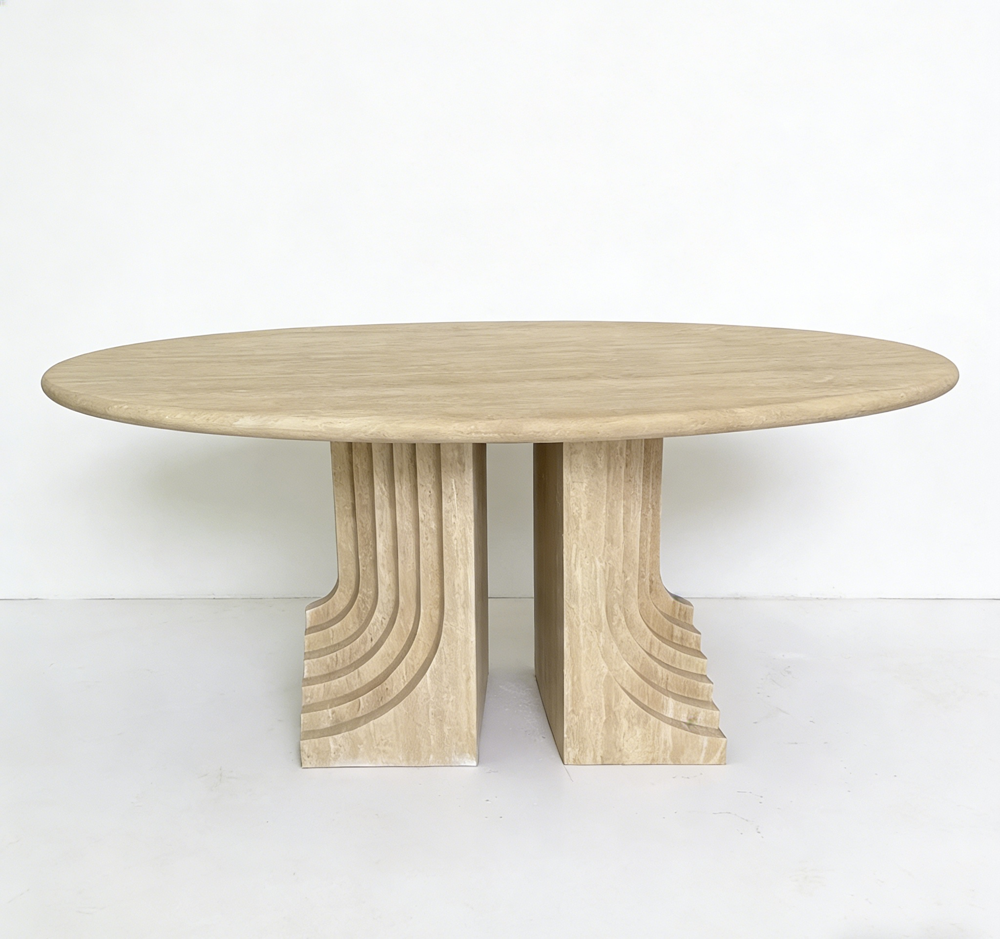

Back to products
MaterialNatural Travertine
FinishHoned, polished, filled, or unfilled
MOQ1 piece custom order
Lead Time25-45 days after confirmation
Made-to-Measure Table
Minimal Travertine Dining Table
A simple travertine table designed for modern interiors while preserving the natural personality of stone.
Send your target size, quantity, finish, and reference photo or drawing for factory review.
Product Overview
Built around your drawing, material, and market requirement.
The simple travertine dining table is a practical product direction for buyers who want a clean form, stable production, and easy interior matching.
MaterialNatural Travertine
UsageDining Room, Villa, Apartment, Commercial Interior
FinishHoned, polished, filled, or unfilled
MOQ1 piece custom order
Lead Time25-45 days after confirmation
Applications
Where buyers typically use this product.
Use these directions to match the product to your collection, project type, or target market before requesting a quote.
Custom Options
Tell us what you need to change before production starts.
Most buyers confirm size, finish, structure, and packing first. Use this section to identify the details you want quoted or adjusted.
- Custom table size
- Straight or softened edge detail
- Filled or open-pore travertine texture
- Different base structures
- Packaging for international delivery
Buyer Questions
Common questions before ordering custom stone products.
These are the questions buyers usually ask before moving from reference stage to quote confirmation and production review.
Is travertine suitable for dining tables?
Yes, with the right finish, sealing, and daily care, travertine works well for dining tables.
Can the edge detail be changed?
Yes. Straight, eased, rounded, bevel, and custom edge details can be discussed.
Do you provide care advice?
Yes. We can share maintenance suggestions for natural stone surfaces.